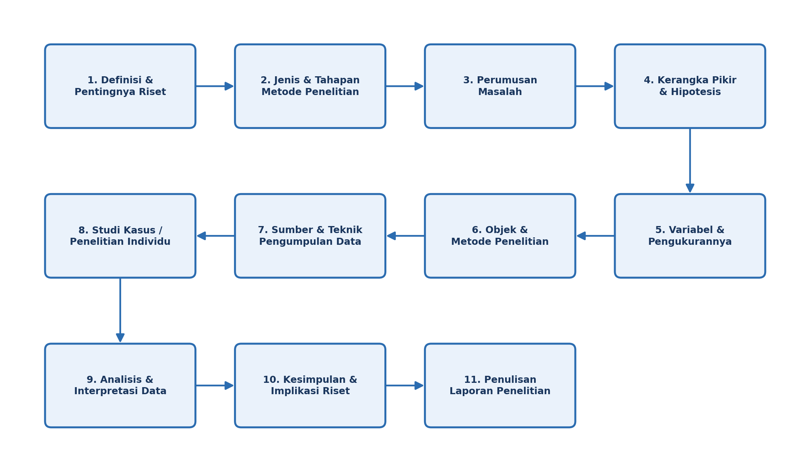

Daftar Publikasi Penelitian Dosen
Departemen Informatika, Fakultas Teknik, Universitas Hasanuddin
|
|
Daftar Publikasi Penelitian DosenDepartemen Informatika, Fakultas Teknik, Universitas Hasanuddin |
Departemen Informatika, Fakultas Teknik, Universitas Hasanuddin aktif melakukan kegiatan R&D (riset dan pengembangan) dalam bidang kecerdasan buatan, visi komputer, Internet of Things (IoT), dan jaringan komputer. Kegiatan penelitian mencakup pengembangan sistem cerdas, pengolahan citra dan video, perangkat IoT, serta teknologi jaringan dan komunikasi data. Sejumlah penelitian dikembangkan melalui pendekatan "teknologi tepat guna" yang mengutamakan penerapan hasil riset untuk menyelesaikan permasalahan nyata — baik di lingkungan akademik maupun masyarakat.
| Tahun | Informasi Publikasi | Tautan | |
|---|---|---|---|
| Judul Karya Ilmiah | Nama Jurnal / Konferensi | ||
| 2025 | Smart Detection of Sugarcane Leaf Rust Using UAV-Based Multispectral Imaging and Mask R-CNN | Engineering, Technology & Applied Science Research | Buka Tautan |
| 2024 | IndoWaveSentiment: Indonesian Audio Dataset for Emotion Classification | Data in Brief | Buka Tautan |
| 2020 | Blob Adaptation through Frames Analysis for Dynamic Fire Detection | Bulletin of Electrical Engineering and Informatics | Buka Tautan |
| A Prototype of Low Cost Weather Station for Data Spatial and Temporal Analysis | ICIC Express Letters | Buka Tautan | |
| 2018 | A Modified Pinhole Camera Model for Automatic Speed Detection of Diagonally Moving Vehicle | Journal of Engineering Science and Technology | Buka Tautan |
| Total | 5 Publikasi | ||
| Tahun | Informasi Publikasi | Tautan | |
|---|---|---|---|
| Judul Karya Ilmiah | Nama Jurnal / Konferensi | ||
| 2022 | Smart Electrical Devices Control with Intrusion Detection Alert | International Journal of Interactive Mobile Technologies | Buka Tautan |
| 2020 | IoT-Based of Automatic Electrical Appliance for Smart Home | International Journal of Interactive Mobile Technologies | Buka Tautan |
| 2019 | Speech to Text in Indonesian Personal Assistant | Journal of Computer Science | Buka Tautan |
| 2018 | A Hybrid Feature Extraction Method for Accuracy Improvement in “Aksara Lontara” Translation | Journal of Computer Science | Buka Tautan |
| Total | 4 Publikasi | ||
| Tahun | Informasi Publikasi | Tautan | |
|---|---|---|---|
| Judul Karya Ilmiah | Nama Jurnal / Konferensi | ||
| 2021 | Lightweight Messaging Protocol for Precision Agriculture | International Conference on Information Networking | Buka Tautan |
| The Effect of Recirculating Aquaculture System on Blue Swimming Crab (Portunus pelagicus) Instar Crablet Growth | AACL Bioflux | Buka Tautan | |
| 2020 | Design and Implementation of REST API for Academic Information System | IOP Conference Series: Materials Science and Engineering | Buka Tautan |
| 2019 | A Low Cost Wearable Medical Device for Vital Signs Monitoring in Low-Resource Settings | International Journal of Electrical and Computer Engineering | Buka Tautan |
| Detection of Megalopa Phase Crab Larvae Using Digital Image Processing | Proc. 2nd ISRITI 2019 | Buka Tautan | |
| Total | 5 Publikasi | ||

© 2026 Departemen Informatika, Fakultas Teknik, Universitas Hasanuddin, adinrafifahrezi@gmail.com — Tugas Mandiri Modul 2: Standardisasi Konten Web